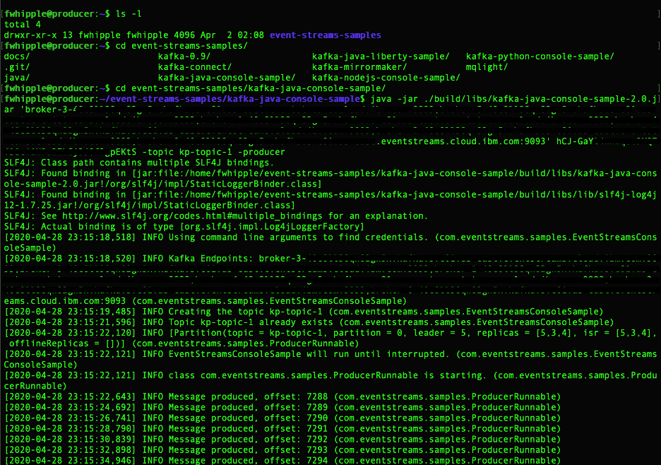
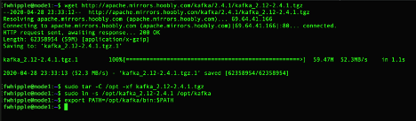
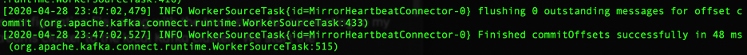
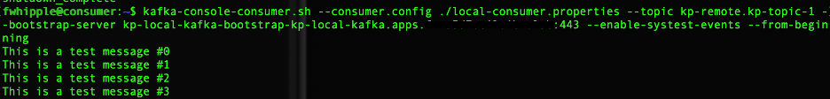
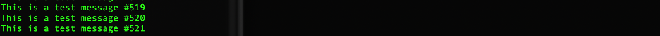
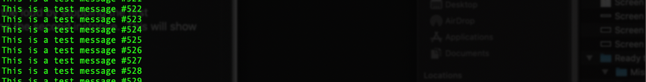

Standalone VM Based Installation of MirrorMaker 2
Here we are showing how to install and configure Kafka MirrorMaker 2 in a cluster on VMs. We will also show how to test the MirrorMaker 2 cluster for resiliency, and finally how to perform a rolling upgrade of the MirrorMaker 2 nodes.
Environment
The environment we’re using is as follows:
- A remote IBM Event Streams cluster on IBM Cloud as the source cluster
- A local Kafka 2.4 cluster deployed on OpenShift using the Strimzi v0.17 Operator
- 2x dedicated Linux VMs for running a clustered pair of MirrorMaker 2 nodes
- A dedicated Linux VM to act as a data stream producer
- A dedicated Linux VM to act as a data stream consumer
- Java VMs are already installed on all VMs
- On the Producer VM, we use a simple producer sample provided by IBM for use with Event Streams: https://github.com/ibm-messaging/event-streams-samples
- On the Consumer VM and MirrorMaker VMs, we use the Client and Cluster Certificates from the Kafka cluster merged into a PKCS 12 format certificate file.
First, start the producer to start sending data to the remote Event Streams cluster. On the Producer VM, start streaming data to Event Streams:

Note the specific brokers and the authentication token used have been blacked-out. We’ll let this producer run in the background producing one message per second.
Next we’ll set up the first MirrorMaker 2 node. To install MirrorMaker, we’re just downloading the Kafka 2.4 distribution from Apache directly: https://www.apache.org/dyn/closer.cgi?path=/kafka/2.4.1/kafka_2.12-2.4.1.tgz
We’ll untar the archive into /opt and create a symlink. Also, set the PATH to include the new Kafka package.

Now we will create a MirrorMaker 2 configuration file based on the sample provided in /opt/kafka/config/connect-mirror-maker.properties and add some options. The full configuration is below:
# Run with ./bin/connect-mirror-maker.sh connect-mirror-maker.properties # specify any number of cluster aliases clusters = kp-remote,kp-local # connection information for each cluster # This is a comma separated host:port pairs for each cluster # for e.g. "A_host1:9092, A_host2:9092, A_host3:9092" # # KP Remote Cluster # IES on IBM Cloud # kp-remote.bootstrap.servers = broker-3 ... eventstreams.cloud.ibm.com:9093 kp-remote.ssl.enabled.protocols=TLSv1.2 kp-remote.ssl.protocol=TLS kp-remote.security.protocol=SASL_SSL kp-remote.sasl.mechanism=PLAIN kp-remote.sasl.jaas.config=org.apache.kafka.common.security.plain.PlainLoginModule required \ username="token" \ password="hCJ ... KtS"; # # KP Local Cluster # Kafka 2.4 on OpenShift using Strimzi 0.17 Operator # kp-local.bootstrap.servers = kp-local-kafka-bootstrap-kp-local-kafka.apps. ... :443 kp-local.ssl.enabled.protocols=TLSv1.2 kp-local.ssl.protocol=TLS kp-local.security.protocol=SSL kp-local.ssl.truststore.location = truststore.p12 kp-local.ssl.truststore.password = cz ... Hi kp-remote->kp-local.tasks.max = 3 kp-remote->kp-local.group.id=mirrormaker2-cluster # enable and configure individual replication flows kp-remote->kp-local.enabled = true # regex which defines which topics gets replicated. For eg "foo-.*" kp-remote->kp-local.topics = .* # Setting replication factor of newly created remote topics replication.factor=3 ############################# Internal Topic Settings ############################# # The replication factor for mm2 internal topics "heartbeats", "B.checkpoints.internal" and # "mm2-offset-syncs.B.internal" # For anything other than development testing, a value greater than 1 is recommended to ensure availability such as 3. checkpoints.topic.replication.factor=3 heartbeats.topic.replication.factor=3 offset-syncs.topic.replication.factor=3 # The replication factor for connect internal topics "mm2-configs.B.internal", "mm2-offsets.B.internal" and # "mm2-status.B.internal" # For anything other than development testing, a value greater than 1 is recommended to ensure availability such as 3. offset.storage.replication.factor=3 status.storage.replication.factor=3 config.storage.replication.factor=3 # customize as needed # replication.policy.separator = _ sync.topic.acls.enabled = false # emit.heartbeats.interval.seconds = 5
Note that passwords and API keys have been obscured as well as hostnames. This configuration file, along with the trust store for connecting to our local Kafka cluster, is all that is needed to replicate topics from the remote EventStreams cluster to the local Kafka cluster. We start the MirrorMaker 2 cluster and wait for it to finish initializing:
./bin/connect-mirror-maker.sh mm2.properties
Once it finishes initializing, we should see messages like the following:

To show that replication is occurring, we will create a consumer on the Consumer VM. Install Kafka as shown above and use the built-in console consumer to view the replicated messages from the local Kafka cluster. To run the consumer, we use the same PKCS 12 certificate file to authenticate to the local cluster, and a local-consumer.properties file that is shown below:
client.id=test-consumer-1 ssl.enabled.protocols=TLSv1.2 security.protocol=SSL ssl.protocol=TLS ssl.truststore.location=truststore.p12 ssl.truststore.password=cz...

Notice that the topic name in this case is kp-remote.kp-topic-1 instead of just kp-topic-1. This is because we’re monitoring the replicated version of kp-topic-1 from the remote EventStreams cluster. MirrorMaker 2 automatically prepends the alias of the remote cluster as it is labeled in the MirrorMaker 2 configuration file. In this case, the alias was kp-remote, so the replicated topic kp-topic-1 is named kp-remote.kp-topic-1.
We can see the test messages from the producer that is writing to EventStreams are being replicated successfully to our local Kafka cluster.
./bin/connect-mirror-maker.sh mm2.properties
Restarting MirrorMaker 2
Now that replication is running successfully and we have both a producer and consumer running to view the traffic in real time, we can set up a second MirrorMaker 2 node. The process is exactly the same as the first MirrorMaker 2 node, and the configuration file is also exactly the same.
Now that both instances of MirrorMaker 2 are running, we can verify that both instances are able to assume the load by stopping the first MirrorMaker 2 instance we created, verifying that replication is still occurring, restarting it, and finally stopping the second instance. This will show that as long as at least one instance of MirrorMaker 2 is running we have successful replication.
From the Consumer:

Now we stop the first MirrorMaker 2, and verify that replication is still occurring via the Consumer VM:

Replication continued as expected. Now we restart MirrorMaker 2 on Node 1, and stop it on Node 2, and check the consumer is still getting records.